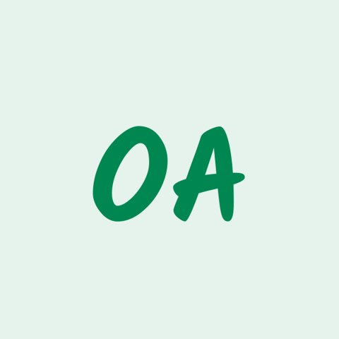

WazoCore Powered by Awarri.
Faster in your own language.
N-ATLaS, Nigeria's open language model, with 15,000 new Yoruba, Hausa and Igbo tokens. The same laptop writes these languages 1.6 to 1.7 times faster. Your code stays the same.
Both models in LM Studio on the same laptop, at real speed. 4 minutes 45 seconds.
Measured in llama.cpp on one laptop CPU. Both models answered the same 20 sentences per language.
The problem
The same words cost more tokens.
A language model reads and writes in tokens. N-ATLaS inherited a vocabulary built mostly for English, so an English word costs about 1.2 tokens and a Yoruba word costs 2.9.
Every reply in these languages is slower to write, costs more to serve and fills the context window sooner.
Tokens needed per word
Lower is better. The same FLORES-200 sentences, in llama.cpp.
Show as a table
| Language | N-ATLaS | WazoCore |
|---|---|---|
| Yoruba | 2.87 | 1.91 |
| Hausa | 2.12 | 1.34 |
| Igbo | 2.53 | 1.56 |
| English, for reference | 1.24 | n/a |
A third fewer tokens.
A 5,000-word health leaflet in Yoruba falls from about 14,350 tokens to 9,550. Less waiting, and a lower bill for every reply.
More fits in context.
The same context window holds 8.8 pages of Yoruba, up from 5.6.
Nothing to rewrite.
Same file format, same chat template, same API. It runs in llama.cpp and LM Studio, offline.
Nothing forgotten.
All 128,256 original tokens keep their ids and their exact embeddings. English tokenises as before.
How it works
One equation. Three steps.
Words per second is tokens per second divided by tokens per word. The engine and the laptop decide the first number. WazoCore lowers the second.
Learn the new words
15,000 new tokens are learned from Yoruba, Hausa and Igbo text, on top of the N-ATLaS tokenizer.
Start from what the model knows
Each new token begins as the average of the pieces it replaces, so it starts with a sensible meaning.
Train, anchored to the original
The new rows and four of 32 layers train on the model's own translations and on professional human translations.
Results
Measured on the file we publish.
Quality is chrF++ against human translations on 700 test sentences per language, over two training runs, with 95% intervals in brackets. No test sentence is trained on.
| WazoCore against N-ATLaS | Yoruba | Hausa | Igbo |
|---|---|---|---|
| Tokens per word | 2.87 → 1.91 | 2.12 → 1.34 | 2.53 → 1.56 |
| Speed-up in words per second, laptop CPU | 1.63× | 1.61× | 1.72× |
| Speed-up for the whole request, laptop CPU | 1.28× | 1.16× | 1.38× |
| chrF++ change, full precision | +2.2 (+1.5, +2.9) | −0.4 (−0.8, +0.1) | +0.2 (−0.4, +0.8) |
| chrF++ change, shipped Q4_K_M file | +1.7 (+0.3, +3.1) | −0.3 (−1.1, +0.6) | −0.1 (−1.4, +1.2) |
In the demo
The same request in LM Studio. First take of each run, default settings.
| Language | N-ATLaS | WazoCore |
|---|---|---|
| Yoruba | 160 tokens, 12.9 s | 84 tokens, 7.8 s |
| Hausa | 78 tokens, 8.0 s | 55 tokens, 5.7 s |
| Igbo | 121 tokens, 10.3 s | 78 tokens, 7.5 s |
The full method, every table and the command behind each number are in docs/METHOD.md.
Get started
Running in minutes.
Download the GGUF, start the server and call it with any OpenAI client. It runs offline on a laptop with 8 GB of memory or more.
Building for another language? The same toolkit takes about two GPU hours per model.
# 1. download and serve hf download mkbadeniyi/WazoCore-8B-v6-long \ WazoCore-8B.Q4_K_M.gguf --local-dir . llama-server -m WazoCore-8B.Q4_K_M.gguf \ -c 4096 --port 8080 # 2. call it from Python from openai import OpenAI client = OpenAI(base_url="http://localhost:8080/v1", api_key="local") reply = client.chat.completions.create( model="wazocore", messages=[{"role": "user", "content": "Translate into Hausa: The clinic opens " "at eight in the morning."}], ) print(reply.choices[0].message.content) # Asibitin yana bude daga karfe takwas na safe.
Team
Who built this.
Kayode Adeniyi
Team lead and AI Research Engineer. PhD Engineering Researcher, Imperial College London. Built the model, the training and the evaluation.

Omowonuola Adekanmbi
Legal Officer. Dual Qualified Lawyer (Nigeria and England & Wales). Master of Law, University of Cambridge. Leads licensing and compliance.
Afolasade Adeniyi
Product Manager and Data Analyst. BSc Economics, Kwara State University. Led user testing and product.
Built by a team from
An entry to the National AI Innovation Challenge (NAIC) 2026, Innovation & Enterprise Track, PS1: Developer Infrastructure.